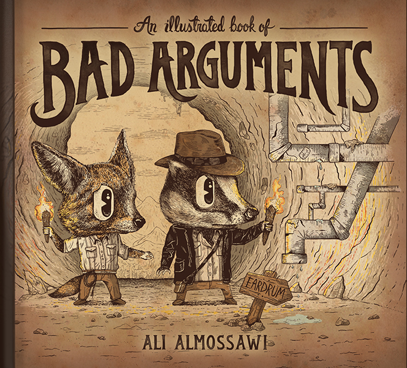

Translated into Russian by
jenny.b17@mail.ru · April 2017
ЗАГРУЗКА


Эта надпись мелким шрифтом совершенно бессмысленна. В бумажных книгах здесь обычно размещается уйма слов мелким шрифтом, перемежающихся значками типа © 2013. Все права защищены. То и сё. Напечатано там-то. Издатель может включить в состав книги прозу, чтобы отвадить пиратов. Ни одна часть этой книги не может быть ни использована, ни воспроизведена никаким манером без письменного разрешения. Следом обычно идет строка-другая об издателе, а потом какие-нибудь циферки.
Ладно, кроме шуток – вам следует знать только вот что: эта книга – часть некоммерческого проекта и выходит по лицензии Creative Commons BY-NC, а значит, кто угодно может пересылать или адаптировать эту работу для любых некоммерческих целей, но с припиской «An Illustrated Book of Bad Arguments by Ali Almossawi, bookofbadarguments.com, 2013».
TODO!! Art direction: Ali Almossawi, Illustration: Alejandro Giraldo.
“Adoro este livro ilustrado de maus argumentos. Um infalível compêndio de falhas.”
“Um resumo de digestão maravilhosamente fácil dos perigos e técnicas de argumentação. Não consigo pensar numa maneira melhor de se ser ensinado ou reapresentado a estas noções fundamentais do discurso lógico. Um pequeno livro delicioso.”

3
Эту книгу стоит читать новичкам в области логических рассуждений, в особенности тем – занимая выражение у Паскаля, – кто устроен так, что лучше всего понимает наглядное. Я составил небольшую подборку распространенных ошибок аргументации, придумал запоминающиеся картинки и снабдил их примерами. Надеюсь, читатель узнает из этой книги о наиболее распространенных ловушках рассуждений и сможет их вычислять и избегать на практике.
5
Литературы по логике и логическим ошибкам – пруд пруди, и она вполне исчерпывающа. Новизна этой небольшой книги – в иллюстрациях к небольшой выборке общих ошибок в рассуждениях, отравляющих многие наши разговоры.
Картинки отчасти вдохновлены аллегориями вроде «Скотного двора» Оруэлла, отчасти – веселым нонсенсом сказок и стихотворений Льюиса Кэрролла. В отличие от этих работ в нашей книге нет связного повествования: каждая история – отдельная сценка, и связаны они между собой лишь стилем и темой; так их можно лучше приспосабливать и применять к той или иной конкретной ситуации. Каждой ошибке посвящен один разворот, отсюда и немногословность.
Читать про то, чего не стоит делать, – полезный опыт. В своих творческих мемуарах «Как писать книги» Стивен Кинг отмечает: «Лучше всего понимаешь, как не надо делать, читая плохую прозу». Он описывает свой опыт чтения совсем уж отвратительного романа как «литературный эквивалент прививки от оспы» [Кинг]. Математик Дьёрдь Пойа, говорят, как-то на лекции сказал, что, преподавая предмет, следует не только хорошо его понимать, но и непременно знать, как его можно понять превратно [Пойа]. Эта книга посвящена главным образом тому, как нам не следует спорить.1
* * * *
1 Продолжить знакомство с ошибками рассуждений можно по книге Т. Эдварда Дэймера.
6
Много лет назад я некоторое время занимался сочинением инструкций к компьютерным программам, применяя предикативную логику первого порядка. Интересно было рассуждать об инвариантах, используя дискретную математику, а не обычную запись на английском. Такой подход внес точность вместо возможной двусмысленности и строгость вместо помаванья руками.
Тогда же я изучил несколько книг по логике высказывания – и современных, и средневековых, одна из них – Роберта Гулы, «Справочник логических ошибок». Труд Гулы напомнил мне мои собственные эвристические** заметки, накаляканные в записной книжке лет за десять до этого, о том, как надо спорить. Эти заметки – результат многих лет разговоров с незнакомыми людьми на форумах в интернете, и в них фигурируют рекомендации вроде «старайся не делать обобщений». Сейчас-то это очевидно, но в мои школьные годы такой вывод показался мне ого-го каким интересным.
Вскоре стало понятно, что формализация доводов может иметь полезные следствия – ясность мыслей и их выражения, объективность и большую уверенность в себе. Способность анализировать доводы – еще и полезный индикатор: когда стоит оставить дискуссию, если она, скорее всего, далее покатится впустую.
7
События нашей жизни и жизни общества, гражданские свободы и выборы президентов обычно подталкивают людей к обсуждению политики и различных убеждений. Если понаблюдать за такими беседами, возникает ощущение, что заметная их часть страдает отсутствием грамотных доводов. Цель многих трудов по логике – помочь людям разобраться с инструментарием и понятиями грамотного рассуждения и тем самым улучшить качество любых дискуссий.
Поскольку убеждение – функция не только логики, но и много чего еще, полезно это «многое что» понимать. Риторика, видимо, – первая в этом списке, а дальше следуют несколько заповедей, принцип простоты, к примеру, и понятие «бремени доказательства» и на ком оно лежит. Пытливый читатель может обратиться к богатой литературе на эту тему.
Законы логики – не законы природы; более того – не все человеческие рассуждения сводятся к одной лишь логике. По словам Марвина Мински, обычные рассуждения на основе здравого смысла трудно перевести в термины логических принципов, равно как и аналогии; Мински добавляет: «Логика в той же мере не объясняет, как мы думаем, в какой грамматика не объясняет, как мы говорим» [Мински]. Логика не производит новых истин, но позволяет нам проверить существующие мыслительные цепочки на непротиворечивость и последовательность. Именно поэтому она – эффективный инструмент анализа и выражения мыслей и доводов.
– Сан-Франциско, октябрь 2013 г.
Первый принцип: не смей обманывать себя – а себя обмануть проще всего.
—Ричард Фейнмен
10
Неформальная ошибка › Отвлекающий маневр › Обращение к последствиям
Обращение к последствиям
Обращение к последствиям – высказывание за или против обоснованности утверждения со ссылкой на результат принятия или отвержения этого утверждения. Лишь то, что утверждение ведет к не самым приятным результатам, еще не означает, что утверждение ложно. То же самое касается и хороших последствий: они не означают, что исходное утверждение истинно. Дэйвид Хэкетт Фишер как-то сказал, что «качество, присущее результату, никак не переносится на причину».
Если результаты симпатичные, довод может подогревать надежды аудитории и даже выдавать желаемое за действительное. А если же последствия нехороши, такой довод играет на страхах слушателей. Возьмем, к примеру, фразу из Достоевского: «Если Бога нет, то все дозволено». Оставим в стороне объективную мораль и присмотримся к утверждению: апелляция к очевидно мрачным последствиям в сугубо материальном мире не говорит нам ничего ни об истинности, ни о ложности предпосылки.
Следует помнить, что подобные доводы ошибочны, только если оперируют утверждениями, имеющими объективное истинное значение, а не при принятии решений, в том числе – политических [Кёртис], – как, например, в случае политика, возражающего против повышения налогов из страха, что это нежелательно скажется на жизни его избирателей.

12
Неформальная ошибка › Отвлекающий маневр › Чучело
Чучело
Намеренное искажение чужого довода ради дальнейшего разбора полученной пародии, а не исходного довода – вот что такое «спорить с чучелом». Представление в ложном свете, передергивание, переформулирование и сверхупрощение – все это способы совершить такую ошибку. Доводы чучела обычно абсурднее, чем исходные, и поэтому их проще опровергать и можно даже выманить оппонента отстаивать гораздо более идиотский довод, нежели предъявленный изначально.
Например: Мой оппонент пытается убедить вас, что мы произошли от обезьян, скакавших по деревьям; какая нелепость. В такой формулировке это явное искажение позиции эволюционной биологии: у человека и высших приматов несколько миллионов лет назад существовал общий предок. Представить формулировку идеи в ложном свете гораздо проще, чем опровергнуть ее доказательства.

14
Неформальная ошибка › Отвлекающий маневр › Отравление источника › Обращение к ложному авторитету
Обращение к ложному авторитету
Обращение к авторитету есть апелляция к скромности [Энгел], т.е. ссылка на бóльшие знания у других. В потрясающем большинстве случаев всего, во что мы верим, – от атомов до устройства Солнечной системы, – мы полагаемся на надежность чужого авторитета. То же верно и для любых исторических заявлений, перефразируя К. С. Льюиса. Ссылаться на относящиеся к делу авторитеты имеет смысл – ученые так и делают. Довод становится ошибочным, когда обращение происходит к авторитету, не являющемуся экспертом в данной конкретной области. То же можно сказать и об обращении к смутно авторитетному источнику – некоему соборному мнению невнятной совокупности людей. Пример: Немецкие ученые доказали, что некое нечто – правда.
Еще одна разновидность обращения к ложному авторитету – отсылка к древней мудрости, т.е. нечто есть истина лишь потому, что так когда-то считали. Пример: Астрологией занимались такие технологически развитые цивилизации, как Древний Китай. Следовательно, астрология – правда. Встречаются отсылки к древней мудрости ради доказательства представлений специфических либо меняющихся со временем. Пример: Много веков назад люди спали по девять часов в сутки, следовательно, и мы должны спать столько же и сейчас. Люди в прошлом спали по девять часов по массе разнообразных причин. Что никак не подкрепляет довода.

16
Неформальная ошибка › Подмена понятий › Неоднозначность2
Неоднозначность
Неоднозначность эксплуатирует свойство расплывчатости языка путем изменения смысла слова в процессе обсуждения и применяет разные смыслы одного и того же понятия для получения того или иного вывода. Слово, значение которого сохраняется неизменным в течение всего разговора, используется однозначно. Рассмотрим следующий довод: Как можете вы быть против веры, если дружба, любовь и финансовые инвестиции всегда основаны на вере? В данном случае значение слова «вера» смещается в пределах одного предложения с духовного упования на творца к оценке рисков.
Типичный случай возникновения такой ошибки – споры о науке и религии, в которых слово «почему» может применяться неоднозначно. В одном контексте этим словом обозначают поиск причины, что, так уж вышло, есть главный стимул науки, а в другом оно может проявиться при обозначении цели, при обсуждении морали, а на эти вопросы наука может не иметь ответов. Пример: Наука не может растолковать, почему все у нас вот так. Почему мы существуем? Почему следует придерживаться морали? Раз так, нам стоит искать другие источники ответов на вопрос, почему все у нас вот так.
2 Иллюстрация к этой главе основана на беседе Алисы с Белой Королевой в сказке Льюиса Кэрролла «Алиса в Зазеркалье».

18
Неформальная ошибка › Pressuposto Injustificado › Falso Dilema3
Falso Dilema
Um falso dilema é um argumento que apresenta um conjunto de duas categorias possíveis e assume que tudo no âmbito daquilo que está a ser discutido tem de ser um elemento desse conjunto. Se uma dessas categorias é rejeitada, então a outra terá obrigatoriamente de ser aceite. Por exemplo: na guerra contra o fanatismo, não há meios-termos; ou se está connosco ou se está com os fanáticos. Na realidade existe uma terceira opção, podendo-se muito bem ser neutro; e uma quarta opção, podendo-se ser contra ambas as posições; e até mesmo uma quinta opção, podendo-se identificar com elementos de ambas as partes.
No livro The Strangest Man menciona-se que o físico Ernest Rutherford contou certa vez ao seu colega Niels Bohr uma parábola sobre um homem que comprou um papagaio de uma loja para acabar por o devolver porque não falava. Após várias visitas semelhantes, o gerente da loja acaba por lhe dizer: “Oh, pois é! O senhor queria um papagaio que fala. Por favor desculpe-me. Eu dei-lhe um papagaio que pensa.” Ora, Rutherford estava claramente a empregar a parábola para ilustrar o génio do silencioso Dirac,4 embora se consiga imaginar como é que alguém poderia usar uma tal dialéctica para sugerir que uma pessoa é ou silenciosa e uma pensadora, ou faladora e uma imbecil.
3 Esta falácia é também conhecida como a falácia do meio excluído, falácia do preto-e-branco, ou a falsa dicotomia.
4 O brilhante físico teórico britânico Paul Dirac (8 de Agosto de 1902 – 20 de Outubro de 1984), de cujo livro The Strangest Man: The Hidden Life of Paul Dirac, Quantum Genius de Graham Farmelo é uma biografia (N.T.).
20
Неформальная ошибка › Falácia Casual › Falsa Causa
Falsa Causa
Esta falácia assume uma causa para determinado evento quando não existe qualquer prova de que tal causa exista. Dois eventos podem ocorrer um após o outro, ou até em simultâneo, por estarem correlacionados, seja por acidente ou devido a qualquer outro factor desconhecido; não se pode concluir estarem causalmente ligados sem provas. O terramoto recente deveu-se às pessoas desobedecerem ao rei não é um bom argumento.
A falácia tem dois tipos específicos: “depois disto, portanto, por causa disto”5 e “com isto, portanto por causa disto”.6 Em relação ao primeiro: porque um evento aconteceu antes de outro, diz-se tê-lo causado. Em relação ao segundo: porque um evento acontece ao mesmo tempo que um outro, diz-se tê-lo causado. Em várias disciplinas, isto diz-se ser o confundir correlação com causalidade.7
Aqui está um exemplo parafraseado do comediante Stewart Lee: Eu não posso dizer que, por ter feito um desenho de um robot em 1976 e depois ter estreado o filme Star Wars, eles me tenham copiado a ideia. Aqui está outro que vi recentemente num fórum online: O atacante mandou abaixo o site da empresa ferroviária e quando verifiquei os horários de chegada dos comboios, acreditam que estavam todos atrasados?! O que o autor deste post não percebeu é que aqueles comboios raramente chegam a tempo e horas, e assim, sem qualquer tipo de controlo científico, a inferência é infundada.
5 e 6 Comumente referidas em Português pela expressão latina Post hoc, ergo propter hoc e Cum hoc, ergo propter hoc, respectivamente. (N. do T.)
7 Ao que consta, demonstrou-se que comer chocolate e ganhar um Prémio Nobel estão altamente correlacionados, o que talvez aumente as esperanças de muito consumidor de chocolate.
22
Неформальная ошибка › Отвлекающий маневр › Apelo à Emoção › Apelo ao Medo
Apelo ao Medo
Esta falácia joga com os temores de uma audiência, imaginando um futuro assustador que seria da sua lavra caso determinada proposição fosse aceite. Ao invés de apresentar provas que demonstrem que uma conclusão decorre de um conjunto de premissas, o que pode fornecer um motivo legítimo para o medo, tais argumentos dependem de retórica, ameaças ou mentiras. Por exemplo: peço a todos os funcionários para votarem no candidato que escolhi nas próximas eleições. Se o outro candidato ganhar, vai aumentar os impostos e muitos de vós irão perder os empregos.
Aqui está outro exemplo, derivado do romance O Processo: Devia dar-me todos os seus bens antes de a polícia aqui chegar. Eles vão acabar por colocá-los em armazenagem e as coisas em armazenagem perdem-se. Aqui, embora o argumento seja mais provavelmente uma ameaça, ainda que subtil, existe uma tentativa de argumentação. Ameaças flagrantes ou ordens que não tentam fornecer provas que as sustentem não devem ser confundidas com esta falácia, mesmo que explorem a capacidade para o medo de cada um (Engel).
Um apelo ao medo pode partir para a descrição de um conjunto de acontecimentos terríveis que ocorreriam como resultado da aceitação de uma proposição sem que haja relações causais claras entre ambas as coisas, tornando-se assim reminiscente de uma “bola de neve”. Pode também fornecer uma e apenas uma alternativa para a proposição sob ataque: a defendida pelo atacante; em cujo caso seria reminiscente de um falso dilema.

24
Неформальная ошибка › Analogia Fraca › Amostra Não-Representativa › Generalização Inadequada
Generalização Inadequada
(Dicto Simpliciter)
(Dicto Simpliciter)
Esta falácia é cometida quando se generaliza a partir de uma amostra demasiado pequena ou demasiado especial para ser representativa de uma população.
Embora convenientes, as generalizações apressadas podem conduzir a resultados custosos e catastróficos. Por exemplo, pode argumentar-se que os pressupostos de engenharia que levaram à explosão do Ariane 5 durante o seu primeiro voo foram o resultado de uma generalização apressada: o conjunto de casos de teste que foram usados para o controlador8 do Ariane 4 não foi amplo o suficiente para abranger o conjunto necessário de casos de uso no controlador do Ariane 5. Descartar decisões como a de não efectuar novos casos de teste resume-se habitualmente à habilidade de argumentação dos engenheiros e gestores, daí a relevância deste e outros exemplos similares para a nossa discussão sobre falácias lógicas.
Aqui está outro exemplo a partir d’As Aventuras de Alice no País das Maravilhas, no qual Alice infere que, dado estar a flutuar numa massa de água, terá de estar por perto uma estação de comboios e, por conseguinte, auxílio: “Alice só tinha ido uma vez à praia e chegara à conclusão de que a qualquer praia onde uma pessoa vá há-de encontrar sempre uma série de barracas, crianças a cavar na areia com pazinhas, uma fila de pensões e hotéis e, por trás deles, uma estação de caminho-de-ferro.” (Carroll).
8 Ou seja, o software responsável pelo controlo de trajectória dos foguetes europeus Ariane de uso espacial (N. do T.)
26
Неформальная ошибка › Falácia de Informação em Falta › Apelo à Ignorância9
Apelo à Ignorância
(Argumentum ad Ignorantiam)
(Argumentum ad Ignorantiam)
Um tal argumento assume que uma proposição é verdadeira apenas porque não existem provas em contrário. Assim, a ausência de provas é tomada como significando a prova de uma ausência. Um exemplo de Carl Sagan: “Não existem provas convincentes de que os OVNIs não estejam a visitar a Terra; portanto os OVNIs existem”. De modo semelhante, quando ainda não se sabia como tinham sido as pirâmides construídas, algumas pessoas concluíram que, salvo prova em contrário, elas tinham de ter sido construídas por poderes sobrenaturais. O ónus da prova recai sempre sobre quem faz uma afirmação.
Para além disto, há que perguntar o que é mais provável ou o que é menos provável com base em informação recolhida a partir de observações anteriores. É mais provável que um objecto ao voar através do espaço seja um artefacto feito pela Humanidade ou um fenómeno natural, ou é mais provável que seja extraterrestres que nos visitam de outro planeta? Uma vez que temos frequentemente observado o primeiro caso e nunca o último, é, portanto, mais razoável concluir-se que os OVNIs provavelmente não serão extraterrestres a visitar-nos.
Uma forma específica de apelo à ignorância é o argumento à incredulidade pessoal, no qual a incapacidade de uma pessoa de imaginar algo conduz a uma crença de que o argumento apresentado é falso. Por exemplo: É impossível imaginar termos mesmo metido um homem na Lua, portanto, isso nunca aconteceu. Respostas deste tipo recebem por vezes a réplica espirituosa: É por essas e por outras que não és um físico.
9 A ilustração é inspirada pela resposta do físico Neil deGrasse Tyson à pergunta de um membro da audiência sobre OVNIs: youtu.be/NSJElZwEI8o.
28
Неформальная ошибка › Подмена понятий › Equivoco › Redefinição › Falácia do Escocês
Falácia do Escocês
Uma afirmação geral pode por vezes ser feita acerca de uma categoria de coisas. Quando confrontados com provas que contestam a veracidade dessa afirmação, um tal argumento, ao invés de as aceitar ou rejeitar, escapa-se ao desafio através de uma redefinição arbitrária dos critérios de adesão à categoria.10
Por exemplo, pode pressupor-se que os programadores são criaturas sem competências sociais. Se alguém aparece e repudia essa afirmação, dizendo: “Mas o João é um programador, e ele não é nada estranho socialmente”, pode receber a resposta: “Sim, mas o João não é um programador “a sério” ”. Não se tornam aqui claros quais os atributos de um programador, nem é a categoria de programadores tão claramente definida como a categoria de, digamos, pessoas com olhos azuis. A ambiguidade permite a uma mente obstinada redefinir as coisas à sua vontade.
O nome desta falácia foi cunhado por Antony Flew no seu livro Thinking about Thinking. Nele, Flew dá o seguinte exemplo: Hamish está a ler o jornal e depara-se com uma história sobre um inglês que cometeu um crime hediondo, ao que ele reage dizendo: “Nenhum escocês faria tal coisa.” No dia seguinte, depara-se com uma peça sobre um escocês que cometeu um crime ainda pior. Em vez de alterar a sua afirmação sobre os escoceses, Hamish reage com: “Nenhum verdadeiro escocês faria tal coisa”.
10 Quando um oponente redefine maliciosamente uma categoria sabendo muito bem que, ao fazê-lo, ele ou ela estarão a representá-la de forma propositadamente errada, o ataque torna-se reminiscente de uma falácia do espantalho.
30
Неформальная ошибка › Отвлекающий маневр › Отравление источника
Отравление источника
A proveniência de um argumento ou a proveniência da pessoa que dele faz uso não têm qualquer efeito na sua validade. Comete-se uma falácia genética quando um argumento é desvalorizado ou defendido puramente por causa da sua história de origem. Como T. Edward Damer aponta: quando se está emocionalmente ligado às origens de uma ideia, nem sempre é fácil ignorar estes sentimentos ao avaliá-la.
Considere-se o seguinte argumento: É claro que ele apoia os sindicalistas em greve; apesar de tudo, vem da mesma aldeia que eles. Aqui, em vez de se avaliar o argumento com base nos seus méritos próprios, o argumento é descartado porque a pessoa calha vir da mesma aldeia que os manifestantes. Essa informação é então usado para inferir que o argumento da pessoa é portanto inválido. Aqui está outro exemplo: Como homens e mulheres do século XXI, não podemos continuar apegados a estas crenças da Idade do Bronze. Porque não?, poder-se-ia perguntar. Devemos descartar todas as ideias originárias da Idade do Bronze simplesmente por terem sido concebidas nesse período?
Inversamente, pode-se também invocar a falácia genética num sentido positivo, dizendo, por exemplo: as opiniões do João sobre arte não podem ser contestadas; ele vem de uma longa linhagem de importantes artistas. Aqui, as provas usadas para suportar a inferência estão tão em falta quanto o estiveram nos exemplos anteriores.
32
Неформальная ошибка › Отвлекающий маневр › Culpa por Associação
Culpa por Associação
Culpar por associação consiste em desacreditar um argumento que proponha uma ideia compartilhada por um indivíduo ou um grupo socialmente demonizados. Por exemplo: O meu oponente está a propor a criação de um sistema de saúde que seria semelhante ao dos países socialistas. Isto seria claramente inaceitável. O sistema de saúde proposto assemelhar-se ou não ao de países socialistas é um factor que não tem influência alguma sobre se ele é bom ou mau. O argumento é um portanto um completo non sequitur.
Um outro tipo de argumento, que tem sido repetido ad nauseam nalgumas sociedades, é o seguinte: Não podemos deixar as mulheres conduzir, porque nos países infiéis deixa-se as mulheres conduzir. Essencialmente, o que este e os exemplos anteriores tentam argumentar é que um determinado grupo de pessoas é absoluta e categoricamente mau. Por isso a partilha, mesmo que de um único atributo, com o referido grupo, faria de nós um membro dele, o que nos concederia todos os males associados a esse grupo.
34
Falácia Formal › Falácia Proposicional › Afirmação do Consequente
Afirmação do Consequente
Uma das muitas formas de argumentação válida é o modus ponens (o modo de afirmar afirmando) e toma a seguinte forma: Se A então C. A; então C. Mais formalmente:
A ⇒ C, A ⊢ C.
Temos aqui três proposições: duas premissas e uma conclusão. A é o chamado antecedente e C o consequente. Por exemplo: Se água colocada ao nível do mar estiver a ferver, então a sua temperatura é de pelo menos 100 ° C. Este copo de água está a ferver enquanto colocado ao nível do mar; portanto, a sua temperatura é de pelo menos 100 ° C. Tal argumento é não só válido como também sólido.
Afirmar o consequente é uma falácia formal que toma a seguinte forma: Se A então C. C; então A.
O erro que se faz é presumir que, se o consequente for verdadeiro, então o antecedente deve ser também verdadeiro, o que, na realidade, não necessita de ser o caso. Por exemplo: Quem vai para a universidade é mais bem-sucedido na vida. O João é bem-sucedido. Portanto, ele deve ter ido para a universidade. Claramente, o sucesso do João pode ser resultante da sua formação académica, mas pode também ser um resultado da maneira como foi criado, ou talvez do seu empenho em superar situações difíceis. De modo mais geral, não se pode dizer que, por causa da formação académica implicar sucesso, que se alguém for bem-sucedido, então é necessário ter recebido uma boa formação.
36
Неформальная ошибка › Отвлекающий маневр › Отравление источника › Ad Hominem › Apelo à Hipocrisia
Apelo à Hipocrisia
Também conhecida pelo seu nome latino “tu quoque”, ou seja, “também tu”, esta falácia envolve contrapor uma acusação a outra acusação em vez de se abordar a questão a ser levantada; com a intenção de se desviar a atenção do argumento original. Por exemplo, o João diz: "Este homem está errado, porque não tem integridade; basta perguntar-lhe porque foi ele demitido do seu último emprego”, ao que o Pedro responde: “Que tal falarmos sobre o bónus chorudo que levaste para casa o ano passado, apesar de metade da tua empresa ter sido despedida?”. O apelo à hipocrisia também pode ser invocado quando uma pessoa ataca outra porque o que aquilo que ela defende entra directamente em conflito com as suas acções passadas (Engel).
Aqui está outro exemplo, do filme Obrigado por Fumar (título original: Thank You For Smoking. Fox Searchlight Pictures, 2005) de Jason Reitman, onde uma troca de galhardetes pejada de tu quoque é assim rematada pelo bem-falante lobista do tabaco, Nick Naylor: “Só acho engraçada a ideia de que o cavalheiro de Vermont me acuse de ser hipócrita quando este mesmo homem, num único dia, deu uma conferência de imprensa na qual clamou para que os campos de tabaco americano fossem queimados e depois saltou para dentro de um jacto privado e voou para a Farm Aid,11 onde conduziu um tractor em palco enquanto lamentava a ruína do agricultor norte-americano.”
11 Concerto anual de beneficência em apoio aos agricultores norte-americanos, organizado pela associação com o mesmo nome. N. do T.
38
Неформальная ошибка › Отвлекающий маневр › Bola de Neve
Bola de Neve
Uma falácia “bola de neve”12 procura desacreditar uma proposição argumentando que a sua aceitação iria certamente levar a uma série de eventos, um ou mais dos quais são indesejáveis. Embora se possa dar o caso da sequência de eventos vir a suceder-se, com cada uma das transições a ocorrer segundo determinada probabilidade, este tipo de argumento assume que elas acontecerão de forma absolutamente inevitável sem, no entanto, fornecer provas para tal. Esta falácia joga com os temores de um público e está relacionada com várias outras falácias, tais como o apelo ao medo, o falso dilema e o argumento por consequência.
Por exemplo: Não devíamos autorizar o acesso não-controlado à Internet. A seguir vai-se a ver e estará toda a gente a frequentar sites pornográficos e, não tarda, toda a estrutura moral da nossa sociedade se desintegrará e ficaremos reduzidos a animais. É flagrantemente claro que nenhuma prova é dada para além de certas pressuposições sobre conduta e a conjectura infundada de que o acesso à Internet implica a desintegração do tecido moral de uma sociedade.
12 A “bola de neve” aqui descrita é de tipo causal.
40
Неформальная ошибка › Отвлекающий маневр › Apelo à popularidade
Apelo à popularidade
Também conhecido como apelo ao povo ou argumento ad populum, este argumento parte do facto de, se um número considerável de pessoas, ou talvez mesmo a maioria, acredita em algo, então esse algo será verdade. Alguns dos argumentos que têm impedido a aceitação generalizada de ideias pioneiras são deste tipo. Galileu, por exemplo, enfrentou o ridículo dos seus contemporâneos por causa do seu apoio ao modelo heliocêntrico de Copérnico. Mais recentemente, Barry Marshall teve que tomar a medida extrema de se inocular a si próprio a fim de convencer a comunidade científica de que as úlceras pépticas podem ser causadas pela bactéria H. pylori; uma teoria que foi, inicialmente, amplamente descartada.
Levar as pessoas a aceitar o que é popular é um método frequentemente utilizado na publicidade e na política. Por exemplo: todos os miúdos fixes usam este gel para o cabelo; torna-te um deles. Apesar de ser uma oferta aliciante tornarmo-nos um “miúdo fixe”, isso nada faz para apoiar o imperativo de que se deve comprar o produto anunciado. Os políticos usam frequentemente retórica semelhante para impulsionar as suas campanhas e para influenciar os eleitores.
42
Неформальная ошибка › Falsa Causa › Отравление источника › Ad Hominem13
Ad Hominem
Um argumento ad hominem é todo aquele que ataca o carácter de outrem em vez daquilo que ele ou ela possam estar a dizer, com a intenção de desviar a discussão e desacreditar o argumento adversário. Por exemplo: Tu não és um historiador. Limita-te à tua área académica. Aqui, a pessoa ser ou não ser uma historiadora não tem qualquer impacto no mérito do seu argumento e não reforça de maneira nenhuma a posição argumentativa do atacante.
Este tipo de ataque pessoal é o chamado ad hominem ofensivo. Um segundo tipo, conhecido como ad hominem circunstancial, inclui qualquer argumento que ataca outrem por razões cínicas, julgando-o pelas suas intenções. Por exemplo: Tu não queres mesmo saber da diminuição do crime na cidade, só queres é que as pessoas votem em ti. Há, no entanto, situações em que será legítimo pôr em causa o carácter e integridade de uma pessoa, tais como durante a prestação de um depoimento.
13 A ilustração foi inspirada numa discussão na plataforma Usenet há vários anos, da qual participou um programador teimoso e com excesso de zelo.
44
Неформальная ошибка › Falácia da Petição de Princípio › Círculo Vicioso
Círculo Vicioso
A falácia de círculo vicioso é um dos quatro tipos de argumentos conhecidos como falácias da petição de princípio ou argumento circular (Damer), nos quais a conclusão surge implícita ou explicitamente numa ou mais premissas. Num círculo vicioso, a conclusão é ou usada de forma descarada como uma premissa ou, mais frequentemente, parafraseada de modo a parecer-se com uma proposição diferente, quando na realidade não o é. Por exemplo: Estás completamente errado porque não estás a fazer sentido nenhum. Aqui, as duas proposições são uma e a mesma coisa, dado que estar errado e não fazer sentido querem, neste contexto, dizer a mesma coisa. O argumento limita-se a declarar que “por causa de X, então X”, o que não tem sentido algum.
Um argumento circular pode assentar, às vezes, em premissas subentendidas, o que pode torná-lo mais difícil de detectar. Aqui está um exemplo da série de TV australiana Please Like Me, em que uma das personagens condena outra, um não-crente, ao inferno, ao que ela responde: “[Isso] não faz qualquer sentido. É como ter um hippie a ameaçar dar-nos um soco na aura.” Neste exemplo, a premissa subentendida é a de que existe um Deus que envia um subconjunto de pessoas para o inferno. Assim, a premissa “Existe um Deus que envia os não-crentes para o inferno” é usada para sustentar a conclusão “Existe um Deus que envia os não-crentes para o inferno”.
46
Неформальная ошибка › Pressuposto Injustificado › Composição e Divisão
Composição e Divisão
A falácia de composição consiste em inferir que um todo deve possuir um determinado atributo porque as suas partes constituintes calham ter esse atributo. Para parafrasear Peter Millican: cada animal de um rebanho ter uma mãe não implica que o rebanho como um todo tenha uma mãe. Aqui vai outro exemplo: Cada módulo neste sistema de software foi submetido a um conjunto de testes de unidade e foi aprovado em todos eles. Portanto, quando os módulos são integrados, o sistema de software não viola qualquer uma das invariantes verificadas pelos testes de unidade. A realidade é que a integração de peças individuais introduz novos factores de complexidade num sistema devido às suas várias dependências, que podem, por seu turno, abrir vias adicionais para uma potencial falha sistémica.
A falácia da divisão consiste, inversamente, em inferir que uma parte deve ter um dado atributo porque o todo a que pertence calha possuir esse atributo. Por exemplo: A nossa equipa é imbatível. Qualquer um dos nossos jogadores seria capaz de se bater com um jogador de qualquer outra equipa e eclipsá-lo. Embora possa ser verdade que a equipa como um todo é imbatível, não se pode usar isso como prova para concluir que cada um dos seus jogadores é também ele imbatível. O sucesso de uma equipa claramente nem sempre se traduz numa soma das capacidades individuais dos seus jogadores.

49
Ouvi, há muitos anos, um professor apresentar os argumentos dedutivos através de uma metáfora fantástica, que os descrevia como canos estanques nos quais a verdade entra por um lado e a verdade sai pelo outro. Acontece que foi essa a inspiração para a capa deste livro. Tendo chegado ao fim deste volume, espero que parta não só com uma melhor apreciação dos benefícios dos argumentos estanques em validar e ampliar o conhecimento próprio, mas também das complexidades dos argumentos indutivos, onde as probabilidades entram em jogo. Com esses argumentos em particular, o pensamento crítico revela-se uma ferramenta indispensável. Espero que parta também com uma percepção dos perigos de argumentos frágeis e do quão comuns eles são no nosso dia-a-dia.
Desça para mais · Partilhe no Twitter Facebook
51
Proposição: Uma afirmação que é ou verdadeira ou falsa, mas não ambos. Por exemplo: Lisboa é a maior cidade de Portugal.
Premissa: Uma proposição que fornece apoio para a conclusão de um argumento. Um argumento pode ter uma ou mais premissas.
Argumento: Um conjunto de proposições que visa persuadir através do raciocínio. Num argumento, um subconjunto de proposições, chamadas premissas, fornece apoio a uma outra proposição denominada conclusão.
Argumento Dedutivo: Um argumento no qual caso as premissas sejam verdadeiras, então a conclusão terá de ser verdadeira também. A conclusão diz-se ser uma consequência lógica das premissas. Por exemplo: Todos os homens são mortais. Sócrates é um homem. Logo, Sócrates é mortal.
Argumento Indutivo: Num argumento em que as premissas são verdadeiras, então é provável que a conclusão também o seja.14 A conclusão não deriva, portanto, com necessidade lógica das premissas, mas sim por probabilidade. Por exemplo: De todas as vezes que medimos a velocidade da luz no vácuo, esta é de 3 × 108 m / s. Portanto, a velocidade da luz no vácuo é uma constante
14 Em Ciência, procede-se regra geral de forma indutiva a partir de dados para leis e de leis para teorias, sendo portanto a indução a base de grande parte do processo científico. A indução é normalmente entendida como o testar de uma proposição a partir de uma amostra, por ser impraticável ou impossível fazê-lo de outro modo.
52
universal. Argumentos indutivos partem geralmente de instâncias específicas para um princípio geral.
Falácia Lógica: Um erro de raciocínio que resulta num argumento inválido. Estes erros têm estritamente a ver com o raciocínio usado para transitar de uma proposição para a outra, e não com os factos usados. Por outras palavras: um argumento inválido usado ao debater-se uma questão não significa, necessariamente, que essa questão careça de validade. Falácias lógicas são violações de um ou mais dos princípios que constituem um bom argumento, tais como uma boa estrutura, consistência, clareza, ordem, relevância e completude.
Falácia Formal: Uma falácia lógica cuja forma não se adequa às regras gramaticais e às regras de inferência de cálculo lógico. A validade do argumento pode ser determinada por meio da mera análise da sua estrutura abstracta, sem necessidade de se avaliar o seu conteúdo.
Неформальная ошибка: Uma falácia lógica que se deve ao seu conteúdo e contexto mais do propriamente a sua forma. Se o erro de raciocínio for comumente invocado, então o argumento considera-se uma falácia informal.
Validade: Um argumento dedutivo é válido se a sua conclusão deriva logicamente das suas premissas. Caso contrário, diz-se ser inválido. Os descritores válido e inválido aplicam-se apenas a argumentos e não a proposições.
53
Solidez: Um argumento dedutivo é sólido se for válido e as suas premissas forem verdadeiras. Se qualquer uma destas condições não se verificar, então o argumento não é sólido. A verdade do argumento é determinada a partir da conformidade entre as premissas e conclusões do argumento e os factos do mundo real.
Força: Um argumento indutivo diz-se ser forte se, caso as suas premissas sejam verdadeiras, seja altamente provável que a sua conclusão seja verdadeira também. Caso contrário, se é improvável que a sua conclusão seja verdadeira, então diz-se ser um argumento fraco. Argumentos indutivos não preservam a verdade, ou seja, nunca se dá o caso de que uma conclusão verdadeira tenha de derivar de premissas verdadeiras.
Cogência: Um argumento indutivo é cogente se é forte e as premissas são verdadeiras, ou seja, de acordo com os factos. Caso contrário, diz-se que o argumento não é cogente.
Falseabilidade: Um atributo de uma proposição ou argumento que lhe permite ser refutado ou desmentido através da observação ou da experiência. Por exemplo, a proposição “todas as folhas são verdes” pode ser refutada apontando para uma folha que não é verde. A falseabilidade é um sinal da força de um argumento, e não da sua fraqueza.
55
[Aristotle] Aristotle, On Sophistical Refutations, translated by W. A. Pickard, http://classics.mit.edu/Aristotle/sophist_refut.html
[Avicenna] Avicenna, Treatise on Logic, translated by Farhang Zabeeh, 1971.
[Carroll] Lewis Carroll, Alice's Adventures in Wonderland, 2008,
http://www.gutenberg.org/files/11/11-h/11-h.htm
[Curtis] Gary N. Curtis, Fallacy Files, http://fallacyfiles.org
[Damer] T. Edward Damer, Attacking Faulty Reasoning: A Practical Guide to Fallacy-Free Arguments (6th ed), 2005.
[Engel] S. Morris Engel, With Good Reason: An Introduction to Informal Fallacies, 1999.
[Farmelo] Graham Farmelo, The Strangest Man: The Hidden Life of Paul Dirac, Mystic of the Atom, 2011.
[Fieser] James Fieser, Internet Encyclopedia of Philosophy, http://www.iep.utm.edu
[Firestein] Stuart Firestein, Ignorance: How it Drives Science, 2012.
Scroll down for more · Share on Twitter Facebook
56
[Fischer] David Hackett Fischer, Historians' Fallacies: Toward a Logic of Historical Thought, 1970.
[Gula] Robert J. Gula, Nonsense: A Handbook of Logical Fallacies, 2002.
[Hamblin] C. L. Hamblin, Fallacies, 1970.
[King] Stephen King, On Writing, 2000.
[Minsky] Marvin Minsky, The Society of Mind, 1988.
[Pólya] George Pólya, How to Solve It: A New Aspect of Mathematical Method, 2004.
[Russell] Bertrand Russell, The Problems of Philosophy, 1912,
http://ditext.com/russell/russell.html
[Sagan] Carl Sagan, The Demon-Haunted World: Science as a Candle in the Dark, 1995.
[Simanek] Donald E. Simanek, Uses and Misuses of Logic, 2002,
http://www.lhup.edu/~dsimanek/philosop/logic.htm
[Smith] Peter Smith, An Introduction to Formal Logic, 2003.
57
Scroll down for more · Share on Twitter Facebook